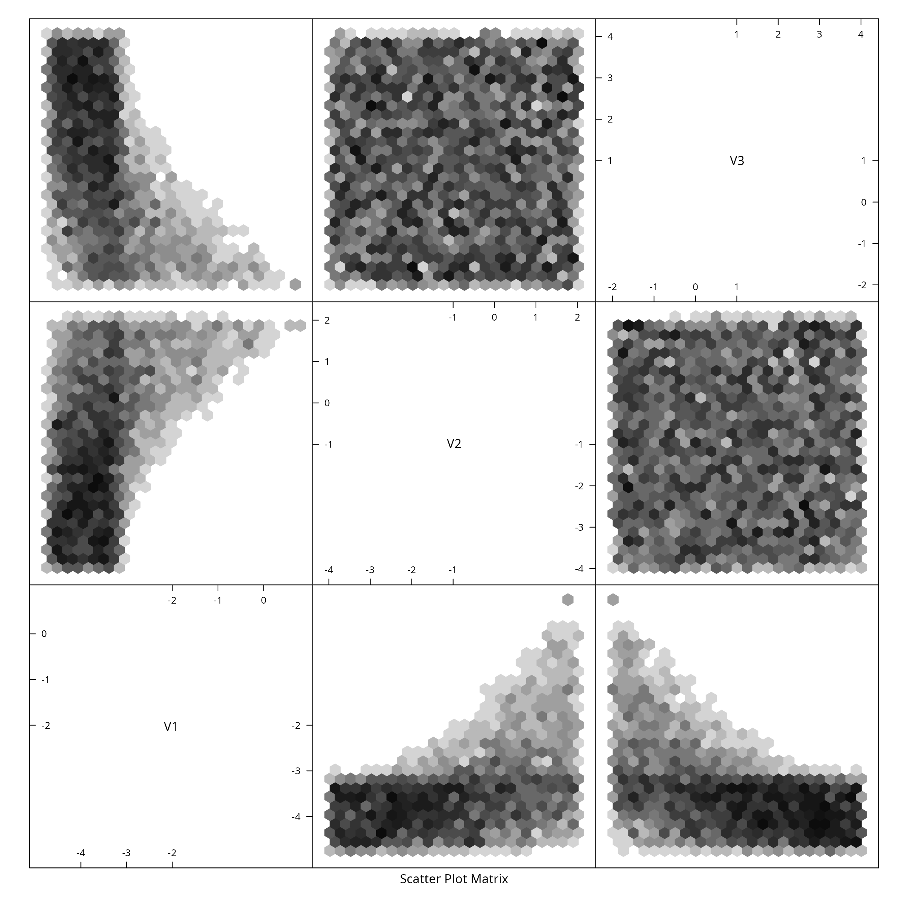
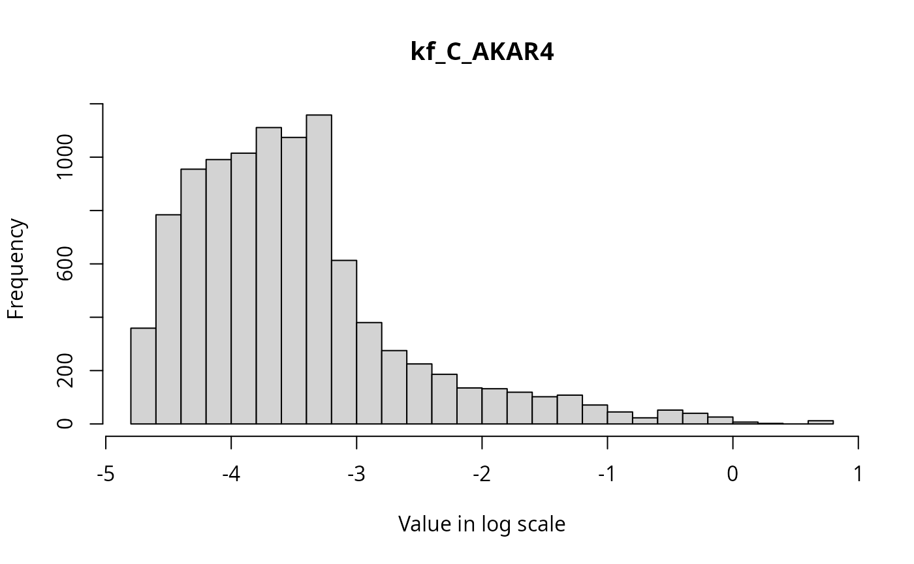
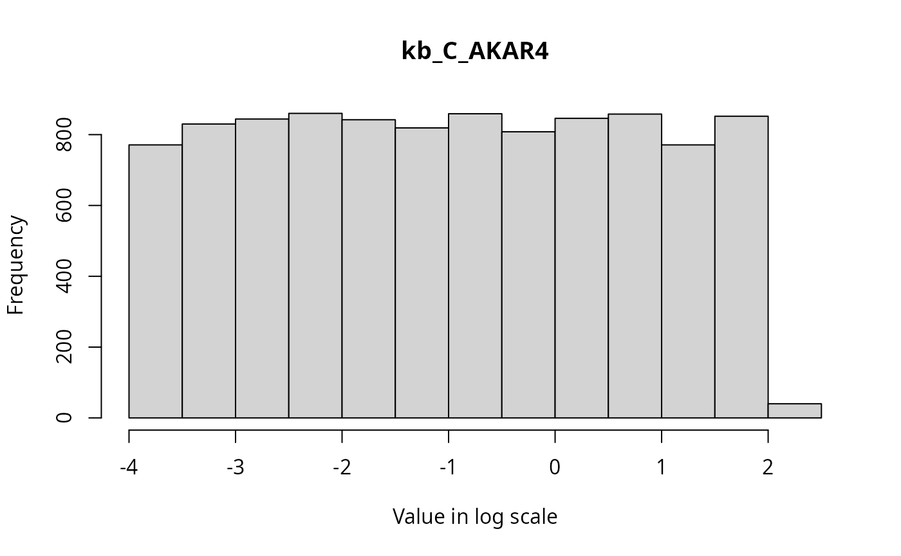
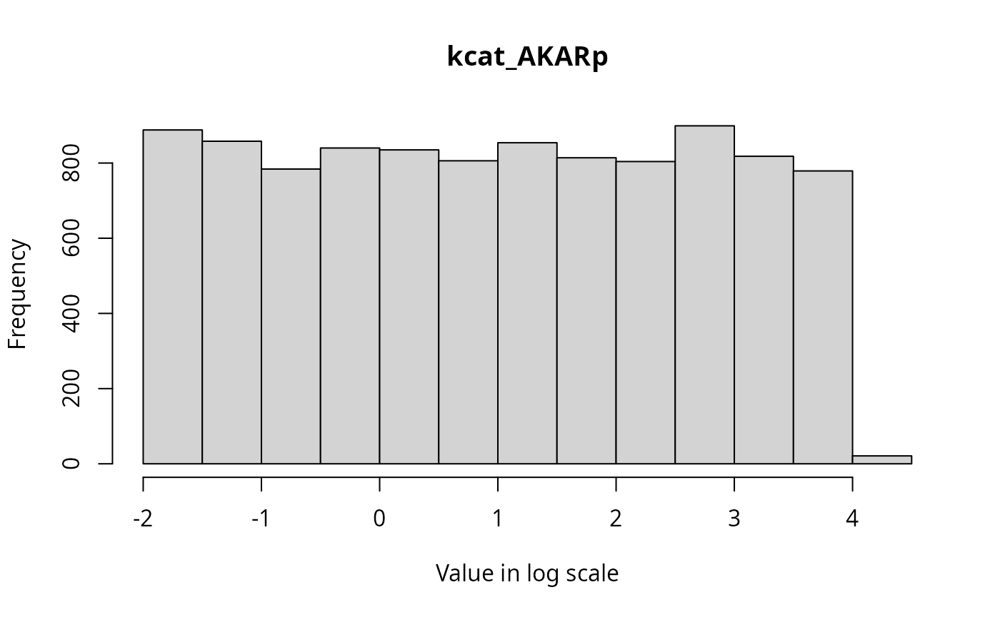
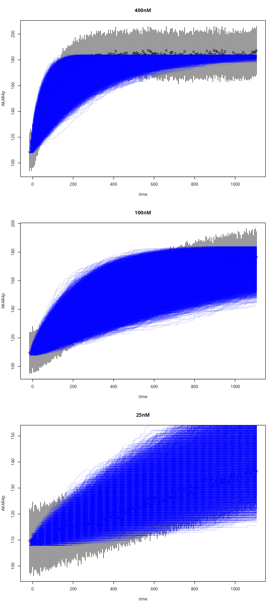

UQ for AKAR4 (stochastic model)
smcAKAR4.RmdWe use a particle filter (aka SMC) on the stochastic AKAR4 model, combined with ABC (due to the stochasticity of the model)
For information about the stochastic model, please read the article Simulate AKAR4 stochastically.
Load the Model
This model is included with the package, as one of the example models.
f <- uqsa_example("AKAR4")
m <- model_from_tsv(f)
o <- as_ode(m,cla=FALSE)
ex <- experiments(m,o)Make a Stochastic Version of AKAR4
sm <- makeGillespieModel(m)
C <- generateGillespieCode(sm)
cat(C,sep="\n",file="AKAR4_st.c")
modelName <- checkModel("AKAR4","AKAR4_st.c")
#> building a shared library from c source, and using GSL odeiv2 as backend (pkg-config is used here).
#> cc -shared -fPIC `pkg-config --cflags gsl` -O2 -o './AKAR4.so' 'AKAR4_st.c' `pkg-config --libs gsl`To simulate the stochastic reaction network model we use the Gillespie algorithm.
Define MCMC settings
# scale to determine prior values
defRange <- 1000
par_val <- values(m$Parameter)
# Define Lower and Upper Limits for logUniform prior distribution for the parameters
ll <- c(par_val/defRange)
ul <- c(par_val*defRange)
ll = log10(ll) # log10-scale
ul = log10(ul) # log10-scale
# Define the prior distribution. In this case Uniform(ll,ul)
dprior <- dUniformPrior(ll, ul) # dprior evaluates the prior density function
rprior <- rUniformPrior(ll, ul) # rprior generates random samples from the priorGenerate an objective function
The objective function simulates the model, to do this it needs a
simulator, it also needs direct access to the data, so ex
is also an explicit arument for makeObjective:
s <- simstoch(
ex,
model.so=comment(modelName),
parMap=logParMap
)
objFunc <- makeObjective(ex,s)Test evaluation of the objective function:
d <- objFunc(log10(values(m$Parameter)))
#> Warning: In 'Ops' : non-'errors' operand automatically coerced to an 'errors'
#> object with no uncertainty
print(d)
#> [,1]
#> 400nM 0.4141267
#> 100nM 1.6707935
#> 25nM 3.2641493It returns a vector of distance values (one per simulation experiment). But, when supplied with several parameters, it returns several columns:
D <- objFunc(t(rprior(7)))
print(D)
#> [,1] [,2] [,3] [,4] [,5] [,6] [,7]
#> 400nM 0.3909535 1.8233718 0.1818822 0.4545825 0.2158727 0.4220448 0.4861189
#> 100nM 1.6325730 2.0164945 0.8349874 1.8173092 0.5380909 1.7013070 1.9541718
#> 25nM 2.8519213 0.9710331 1.4908763 3.8871822 0.9662691 3.2937828 4.4817476Run ABCSMC
We launch the particle filter from the prior (cold start), and pick
resonable values for delta (the ABC distance
threshold).
The data has measurement errors (standard error). The distance
function takes the standard error into account, so the distances
returned are relative, and expected to be close to 1. The function
ABCSMC accepts two values for delta, an
initial guess that is very permissive and a final value that triggers
the SMC algorithm to terminate.
Visualize the sampled parameters
The parameter-values in ABCMCMCoutput$draws are
approximate samples from the posterior distribution, given the
experiments.
The sampled three dimensional parameters for the AKAR4 model can be visualized via pairs of scatter plots, or two dimensional binning:
if (requireNamespace("hexbin")){
hexbin::hexplom(posterior$draws, xbins = 24)
} else {
pairs(posterior$draws, pch=20)
}
#> Loading required namespace: hexbin
Marhinals
The marginal distributions of each parameter in the parameter vector can be visualized via histograms as follows.
for(i in seq_along(par_val)){
hist(
posterior$draws[,i],
breaks = 20,
main=names(par_val)[i],
xlab = "Value in log scale"
)
}


State Trajectories
t_initial <- Sys.time()
Z <- posterior$draws
y <- s(t(Z)) # using the stochastic simulator one final time
t_final <- Sys.time()
cat(difftime(t_final,t_initial,units="min")," minutes")
#> 0.03061804 minutes
par(mfrow=c(3,1))
for (i in seq_along(ex)){
tm <- ex[[i]]$outputTimes
plot( # the data (errorbars)
as.errors(tm),
ex[[i]]$data,
xlab="time",
ylab="AKAR4p",
main=names(ex)[i]
)
matplot( # the simulation
tm,
drop(y[[i]]$func),
type='s',
col=rgb(0,0,1,0.1),
lty=1,
lwd=2,
add=TRUE
)
}